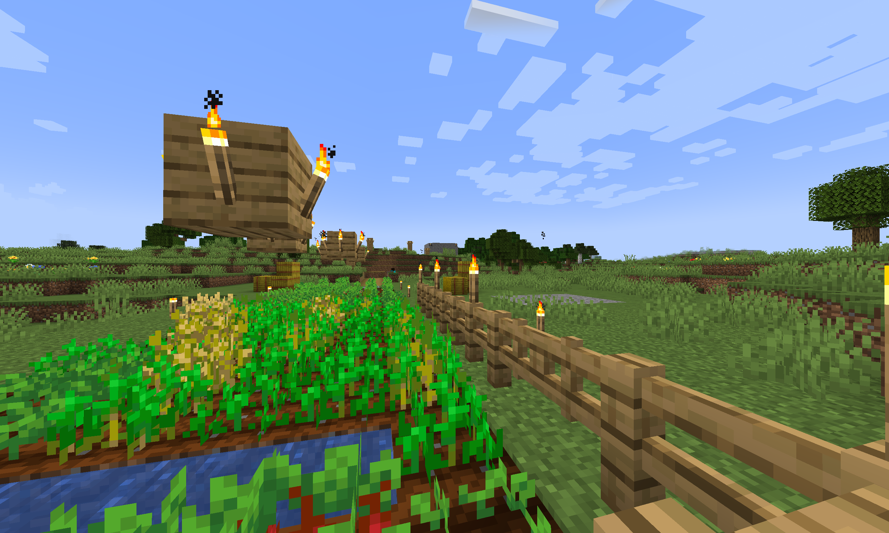

BordSMP
What is BordSMP?
Border + Bored = Bord Survival Multiplayer for Minecraft
This server is the spiritual successor of the old vanilla Minecraft server made better and more social with a few changes.
Play BordSMP
BordSMP is hosted on an on-demand server, meaning anybody can turn on the server whenever they want to play. The server is open to play for anyone that knows someone who plays on the server.
To start the server simply:
-
Visit the initialization website in your web browser linked down below.
-
Then wait for the server to start up, it typically takes about 5 minutes.
-
After the server is started, connect to the server in your Minecraft client with the server domain name below.
Initialization Website: init.bordsmp.jacobyng.com
IP/Domain name: play.bordsmp.jacobyng.com
Gameplay Changes
Main Changes
-
There is an invisible border around spawn.
-
Beds cannot be slept in outside of this border, so respawn will always be within the border.
-
Wearing armor outside the border causes the wearer to suffer damage over time.
-
Being in the Nether or the End is considered outside of the border.
-
Command '/inborder' will inform you whether or not you're in the border.
Additional Changes
-
Dying to pvp where either player is in the border loses the killed no items or levels.
-
Fortune has been removed for pickaxes.
-
Infinity has been removed for bows.
-
Respawn anchors have been removed.
-
Shulker boxes have been removed.
-
Elytra have been removed.
Game Settings
-
Sleep through night: Disabled
-
Insomnia (phantoms): Disabled
-
Difficulty: Hard
-
Border: 65 radius
-
World Limit: 2k radius
-
PVP: True
-
Achievements: Hidden
Game Rules
-
Using lava to grief within the border is against the rules. Same with lava casting.
-
Abusing overlooked ways to get removed items/enchants is considered against the spirit of the game.
-
Because the server is dynamically allocated, solo afk farming costs Jacob money. Afk farming should be limited to when other players are playing on the server.
-
Infinite TNT is considered against the rules. Doubly so within or near the border.
-
Cheating using x-ray or hacked clients is against the rules. Not an anarchy server.
Game Guidelines
-
Taking items from another player's chest is not against the server rules; however, player discretion should be advised as the game does not lift social responsibilities in the real world.
-
Griefing is discouraged; however, due to the size restraint of the border, some tearing down/collision with other people's builds is to be expected. In these conflicts, players are asked to try being open minded.
-
Pvp follows the same as point 1.

Featured Pic: 'A boy walks home after tending to his farm.' - Jacob
2-20-2022
Made by Jacob Young